2 神经网络前向传播¶
0 前向传播前言¶
深度学习神经网络就是大脑仿生，数据从输入到输出经过一层一层的神经元产生预测值的过程就是前向传播（也叫正向传播）。
前向传播涉及到人工神经元是如何工作的（也就是神经元的初始化、激活函数），神经网络如何搭建，权重参数计算、数据形如何状变化。千里之行始于足下，我们一起进入深度学习的知识海洋吧。
1 神经网络¶
学习目标¶
- 知道人工神经网络
1 什么是神经网络¶
人工神经网络（ Artificial Neural Network， 简写为ANN）也简称为神经网络（NN），是一种模仿生物神经网络结构和功能的 计算模型。人脑可以看做是一个生物神经网络，由众多的神经元连接而成。各个神经元传递复杂的电信号，树突接收到输入信号，然后对信号进行处理，通过轴突输出信号。下图是生物神经元示意图：
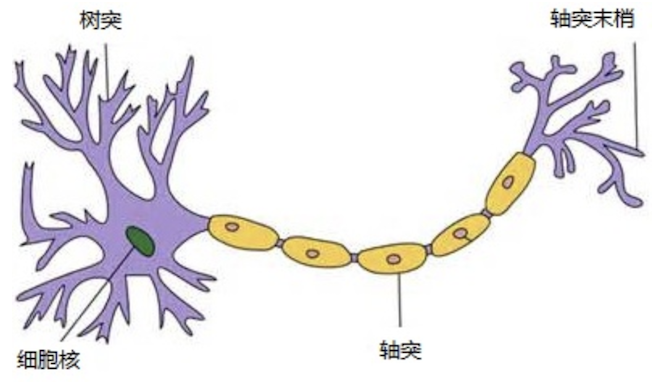
当电信号通过树突进入到细胞核时，会逐渐聚集电荷。达到一定的电位后，细胞就会被激活，通过轴突发出电信号。
2 人工神经网络¶
那怎么构建人工神经网络中的神经元呢？
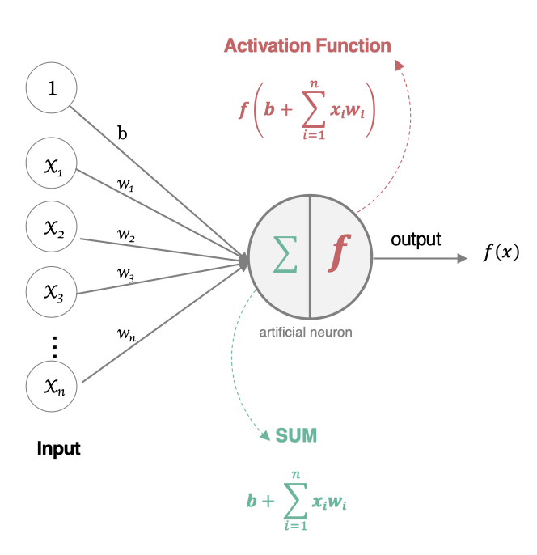
这个流程就像，来源不同树突(树突都会有不同的权重)的信息, 进行的加权计算, 输入到细胞中做加和，再通过激活函数输出细胞值。
接下来，我们使用多个神经元来构建神经网络，相邻层之间的神经元相互连接，并给每一个连接分配一个强度，如下图所示：

神经网络中信息只向一个方向移动，即从输入节点向前移动，通过隐藏节点，再向输出节点移动。其中的基本部分是:
- 输入层: 即输入 x 的那一层
- 输出层: 即输出 y 的那一层
- 隐藏层: 输入层和输出层之间都是隐藏层
特点是：
同一层的神经元之间没有连接。 第 N 层的每个神经元和第 N-1层 的所有神经元相连（这就是full connected的含义), 第N-1层神经元的输出就是第N层神经元的输入。每个连接都有一个权值。
3 神经元的内部状态值和激活值¶
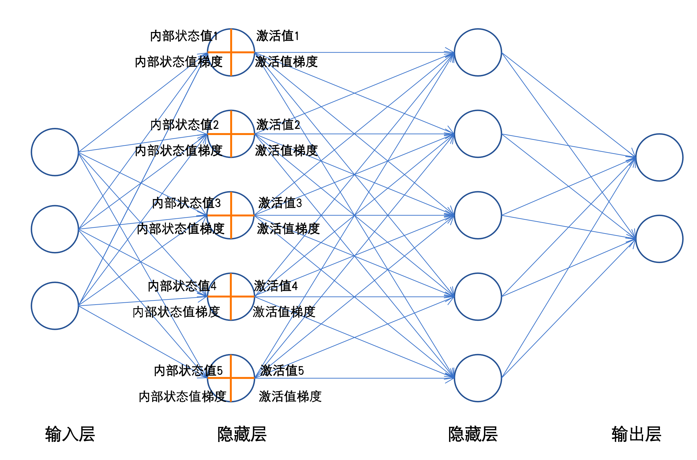
每一个神经元工作时，前向传播会产生两个值，内部状态值和激活值；反向传播时会产生激活值梯度和内部状态值梯度。
通过控制每个神经元的内部状态值、激活值的大小；每一层的内部状态值的方差、每一层的激活值的方差可让整个神经网络工作的更好。
所以下面两个小结，我们将要学习神经元的激活函数，神经元的权重初始化。
4 小结¶
本小节主要带着同学们了解了什么是神经网络。神经网络就是模拟生物神经元的工作机理，并构造仿生的神经元来解决实际问题。一个简单的神经网络，包括输入层、隐藏层、输出层，其中隐藏层可以有很多层，每一层可包含数量众多的的神经元。
2 激活函数¶
学习目标¶
- 理解非线性因素
- 知道常见激活函数
1 网络非线性因素的理解¶
激活函数用于对每层的输出数据进行变换, 进而为整个网络注入了非线性因素。此时, 神经网络就可以拟合各种曲线。如果不使用激活函数，整个网络虽然看起来复杂，其本质还相当于一种线性模型，如下公式所示:
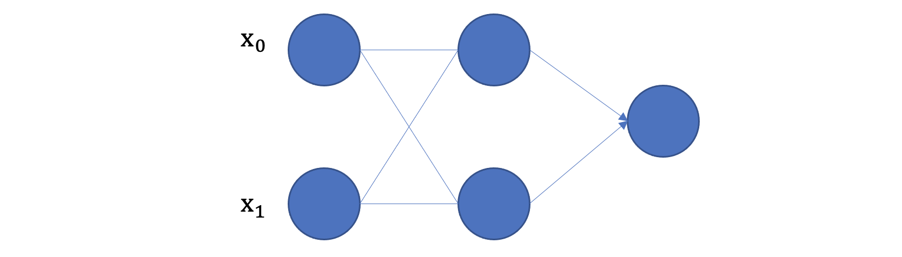
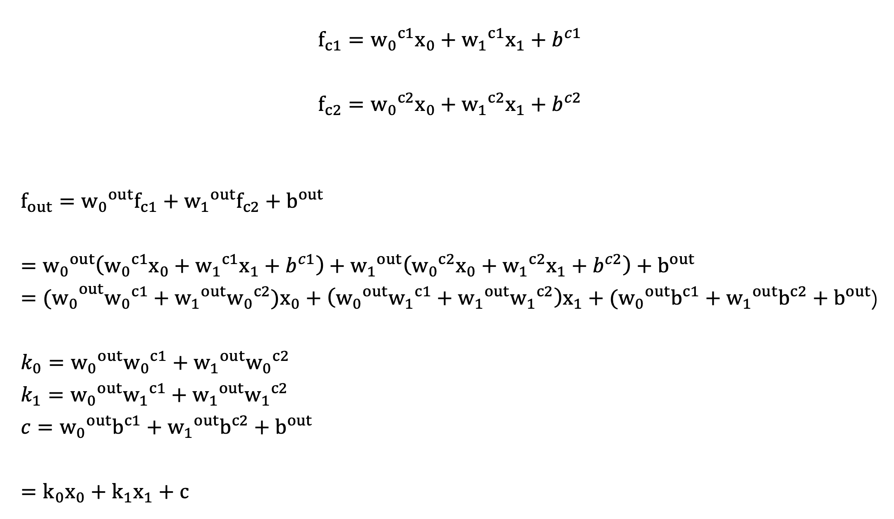
- 没有引入非线性因素的网络等价于使用一个线性模型来拟合
- 通过给网络输出增加激活函数, 实现引入非线性因素, 使得网络模型可以逼近任意函数, 提升网络对复杂问题的拟合能力.
另外通过图像可视化的形式理解：
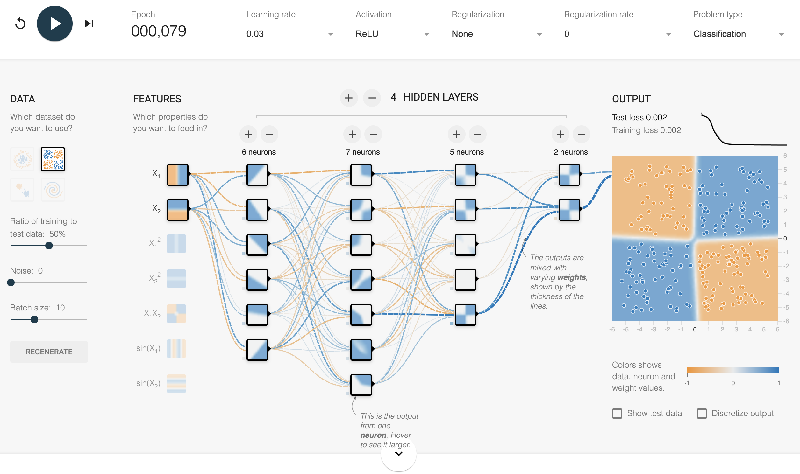
我们发现增加激活函数之后, 对于线性不可分的场景，神经网络的拟合能力更强。
2 常见的激活函数¶
激活函数主要用来向神经网络中加入非线性因素，以解决线性模型表达能力不足的问题，它对神经网络有着极其重要的作用。我们的网络参数在更新时，使用的反向传播算法（BP），这就要求我们的激活函数必须可微。
2.1 sigmoid 激活函数¶
sigmoid 激活函数的函数图像如下:

从 sigmoid 函数图像可以得到，sigmoid 函数可以将任意的输入映射到 (0, 1) 之间，当输入的值大致在 <-6 或者 >6 时，意味着输入任何值得到的激活值都是差不多的，这样会丢失部分的信息。比如：输入 100 和输出 10000 经过 sigmoid 的激活值几乎都是等于 1 的，但是输入的数据之间相差 100 倍的信息就丢失了。
对于 sigmoid 函数而言，输入值在 [-6, 6] 之间输出值才会有明显差异，输入值在 [-3, 3] 之间才会有比较好的效果。
通过上述导数图像，我们发现导数数值范围是 (0, 0.25)，当输入 <-6 或者 >6 时，sigmoid 激活函数图像的导数接近为 0，此时网络参数将更新极其缓慢，或者无法更新。
一般来说， sigmoid 网络在 5 层之内就会产生梯度消失现象。而且，该激活函数并不是以 0 为中心的，所以在实践中这种激活函数使用的很少。sigmoid函数一般只用于二分类的输出层。
在 PyTorch 中使用 sigmoid 函数的示例代码如下:
import torch
import matplotlib.pyplot as plt
import torch.nn.functional as F
def test():
_, axes = plt.subplots(1, 2)
# 函数图像
x = torch.linspace(-20, 20, 1000)
y = F.sigmoid(x)
axes[0].plot(x, y)
axes[0].grid()
axes[0].set_title('Sigmoid 函数图像')
# 导数图像
x = torch.linspace(-20, 20, 1000, requires_grad=True)
torch.sigmoid(x).sum().backward()
axes[1].plot(x.detach(), x.grad)
axes[1].grid()
axes[1].set_title('Sigmoid 导数图像')
plt.show()
if __name__ == '__main__':
test()
2.2 tanh 激活函数¶
Tanh 叫做双曲正切函数，其公式如下：
Tanh 的函数图像、导数图像如下：
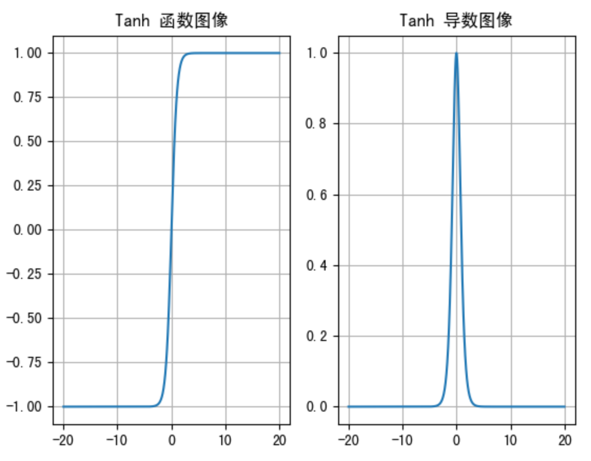
由上面的函数图像可以看到，Tanh 函数将输入映射到 (-1, 1) 之间，图像以 0 为中心，在 0 点对称，当输入 大概<-3 或者 >3 时将被映射为 -1 或者 1。其导数值范围 (0, 1)，当输入的值大概 <-3 或者 > 3 时，其导数近似 0。
与 Sigmoid 相比，它是以 0 为中心的，使得其收敛速度要比 Sigmoid 快，减少迭代次数。然而，从图中可以看出，Tanh 两侧的导数也为 0，同样会造成梯度消失。
若使用时可在隐藏层使用tanh函数，在输出层使用sigmoid函数。
import torch
import matplotlib.pyplot as plt
import torch.nn.functional as F
def test():
_, axes = plt.subplots(1, 2)
# 函数图像
x = torch.linspace(-20, 20, 1000)
y = F.tanh(x)
axes[0].plot(x, y)
axes[0].grid()
axes[0].set_title('Tanh 函数图像')
# 导数图像
x = torch.linspace(-20, 20, 1000, requires_grad=True)
F.tanh(x).sum().backward()
axes[1].plot(x.detach(), x.grad)
axes[1].grid()
axes[1].set_title('Tanh 导数图像')
plt.show()
if __name__ == '__main__':
test()
2.3 ReLU 激活函数¶
ReLU 激活函数公式如下：

函数图像如下:
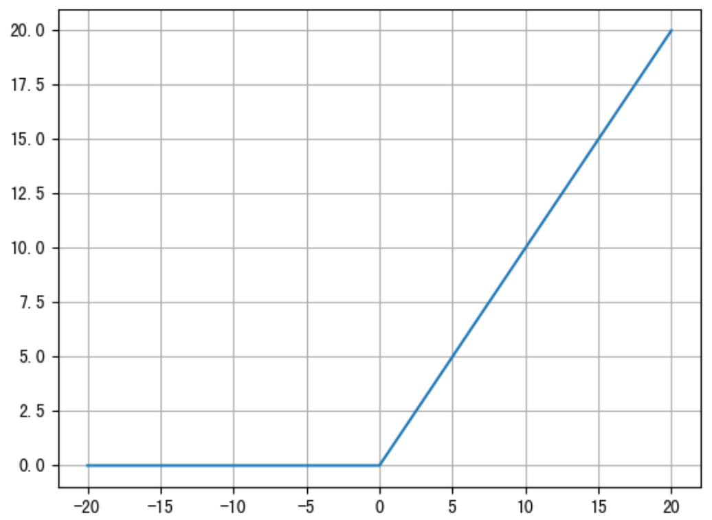
从上述函数图像可知，ReLU 激活函数将小于 0 的值映射为 0，而大于 0 的值则保持不变，它更加重视正信号，而忽略负信号，这种激活函数运算更为简单，能够提高模型的训练效率。
但是，如果我们网络的参数采用随机初始化时，很多参数可能为负数，这就使得输入的正值会被舍去，而输入的负值则会保留，这可能在大部分的情况下并不是我们想要的结果。
ReLU 的导数图像如下:
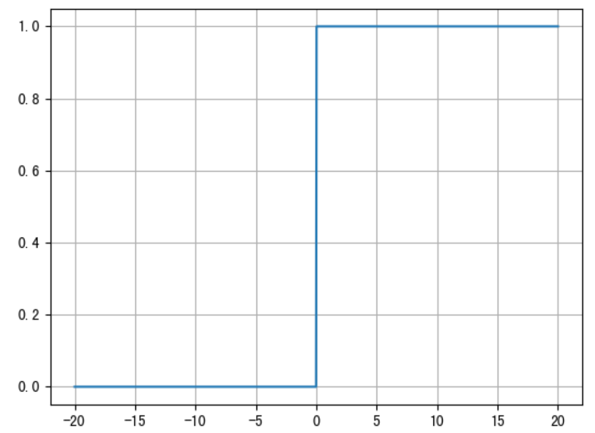
ReLU是目前最常用的激活函数。 从图中可以看到，当x<0时，ReLU导数为0，而当x>0时，则不存在饱和问题。所以，ReLU 能够在x>0时保持梯度不衰减，从而缓解梯度消失问题。然而，随着训练的推进，部分输入会落入小于0区域，导致对应权重无法更新。这种现象被称为“神经元死亡”。
与sigmoid相比，RELU的优势是：
采用sigmoid函数，计算量大（指数运算），反向传播求误差梯度时，求导涉及除法，计算量相对大，而采用Relu激活函数，整个过程的计算量节省很多。 sigmoid函数反向传播时，很容易就会出现梯度消失的情况，从而无法完成深层网络的训练。 Relu会使一部分神经元的输出为0，这样就造成了网络的稀疏性，并且减少了参数的相互依存关系，缓解了过拟合问题的发生。
2.4 SoftMax¶
softmax用于多分类过程中，它是二分类函数sigmoid在多分类上的推广，目的是将多分类的结果以概率的形式展现出来。
计算方法如下图所示：
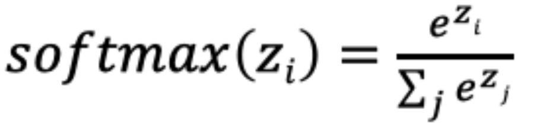
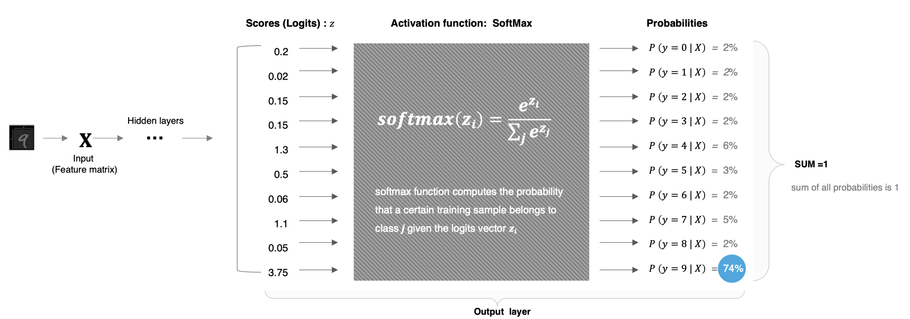
Softmax 直白来说就是将网络输出的 logits 通过 softmax 函数，就映射成为(0,1)的值，而这些值的累和为1（满足概率的性质），那么我们将它理解成概率，选取概率最大（也就是值对应最大的）节点，作为我们的预测目标类别。
import torch
if __name__ == '__main__':
scores = torch.tensor([0.2, 0.02, 0.15, 0.15, 1.3, 0.5, 0.06, 1.1, 0.05, 3.75])
probabilities = torch.softmax(scores, dim=0)
print(probabilities)
程序输出结果:
tensor([0.0212, 0.0177, 0.0202, 0.0202, 0.0638, 0.0287, 0.0185, 0.0522, 0.0183,
0.7392])
3 小结¶
本小节带着同学们了解下常见的激活函数，以及对应的 API 的使用。除了上述的激活函数，还存在很多其他的激活函数，如下图所示:

这么多激活函数, 我们应该如何选择呢?
对于隐藏层:
-
优先选择RELU激活函数
-
如果ReLu效果不好，那么尝试其他激活，如Leaky ReLu等。
-
如果你使用了Relu， 需要注意一下Dead Relu问题， 避免出现大的梯度从而导致过多的神经元死亡。
-
少用使用sigmoid激活函数，可以尝试使用tanh激活函数
对于输出层
-
二分类问题选择sigmoid激活函数
-
多分类问题选择softmax激活函数
-
回归问题选择identity激活函数
3 参数初始化¶
学习目标¶
- 知道常见初始化方法
我们在构建网络之后，网络中的参数是需要初始化的。我们需要初始化的参数主要有权重和偏置，偏重一般初始化为 0 即可，而对权重的初始化则会更加重要，我们介绍在 PyTorch 中为神经网络进行初始化的方法。
1 常见初始化方法¶
均匀分布初始化,权重参数初始化从区间均匀随机取值。即在(-1/√d,1/√d)均匀分布中生成当前神经元的权重，其中d为每个神经元的输入数量。
正态分布初始化, 随机初始化从均值为0，标准差是1的高斯分布中取样，使用一些很小的值对参数W进行初始化.
全0初始化，将神经网络中的所有权重参数初始化为 0.
全1初始化，将神经网络中的所有权重参数初始化为 1.
固定值初始化，将神经网络中的所有权重参数初始化为某个固定值.
kaiming 初始化，也叫做 HE 初始化. HE 初始化分为正态分布的 HE 初始化、均匀分布的 HE 初始化.
xavier 初始化，也叫做Glorot初始化，该方法的基本思想是各层的激活值和梯度的方差在传播过程中保持一致。它有两种，一种是正态分布的 xavier 初始化、一种是均匀分布的 xavier 初始化.
接下来，我们使用 PyTorch 调用相关 API:
import torch
import torch.nn.functional as F
import torch.nn as nn
# 1. 均匀分布随机初始化
def test01():
linear = nn.Linear(5, 3)
# 从0-1均匀分布产生参数
nn.init.uniform_(linear.weight)
print(linear.weight.data)
# 2. 固定初始化
def test02():
linear = nn.Linear(5, 3)
nn.init.constant_(linear.weight, 5)
print(linear.weight.data)
# 3. 全0初始化
def test03():
linear = nn.Linear(5, 3)
nn.init.zeros_(linear.weight)
print(linear.weight.data)
# 4. 全1初始化
def test04():
linear = nn.Linear(5, 3)
nn.init.ones_(linear.weight)
print(linear.weight.data)
# 5. 正态分布随机初始化
def test05():
linear = nn.Linear(5, 3)
nn.init.normal_(linear.weight, mean=0, std=1)
print(linear.weight.data)
# 6. kaiming 初始化
def test06():
# kaiming 正态分布初始化
linear = nn.Linear(5, 3)
nn.init.kaiming_normal_(linear.weight)
print(linear.weight.data)
# kaiming 均匀分布初始化
linear = nn.Linear(5, 3)
nn.init.kaiming_uniform_(linear.weight)
print(linear.weight.data)
# 7. xavier 初始化
def test07():
# xavier 正态分布初始化
linear = nn.Linear(5, 3)
nn.init.xavier_normal_(linear.weight)
print(linear.weight.data)
# xavier 均匀分布初始化
linear = nn.Linear(5, 3)
nn.init.xavier_uniform_(linear.weight)
print(linear.weight.data)
if __name__ == '__main__':
test07()
2 小结¶
网络构建完成之后，我们需要对网络参数进行初始化。常见的初始化方法有随机初始化、全0初始化、全1初始化、Kaiming 初始化、Xavier 初始化等，一般我们在使用 PyTorch 构建网络模型时，每个网络层的参数都有默认的初始化方法，当然同学们也可以通过交给大家的方法来使用指定的方式对网络参数进行初始化。
4 神经网络搭建和参数计算¶
学习目标¶
- 完成简单神经网络的模型搭建
- 知道神经网络模型的参数计算方法
1 构建简单神经网络¶
接下来我们来构建如下图所示的神经网络模型：
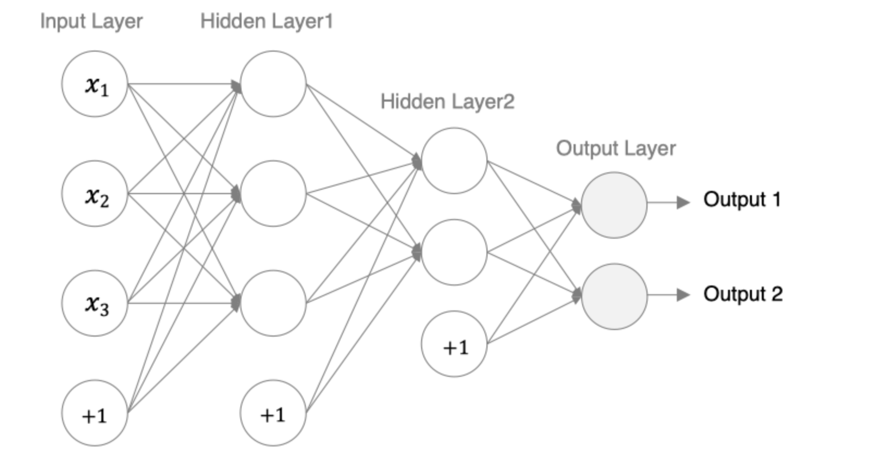
- 编码设计如下：
- 第一个隐藏层：激活函数使用sigmoid，权重初始化采用标准化的xavier初始化
- 第二个隐藏层：激活函数采用relu，权重初始化采用标准化的He初始化
- 输出层如果是二分类，采用softmax做数据归一化
import torch
import torch.nn as nn
from torchsummary import summary
class Model(nn.Module):
def __init__(self,):
super(Model, self).__init__()
self.linear1 = nn.Linear(3, 3)
nn.init.xavier_normal_(self.linear1.weight)
self.linear2 = nn.Linear(3 ,2)
nn.init.kaiming_normal_(self.linear2.weight)
self.out = nn.Linear(2, 2)
def forward(self, x):
# 数据经过第一个线性层
x = self.linear1(x)
x = torch.sigmoid(x)
# 数据经过第二个线性层
x = self.linear2(x)
x = torch.relu(x)
# 数据经过输出层
x = self.out(x)
x = torch.softmax(x, dim=-1)
return x
def dm01_build_model():
# 实例化model对象
mymodel = Model()
# 随机产生数据
mydata = torch.randn(5, 3)
# 数据经过网络
output = mymodel(mydata)
print('mydata.shape--->', mydata.shape)
print('output.shape--->', output.shape)
print('mydata--->\n ', mydata)
print('output--->\n', output)
print('-' * 50)
summary(mymodel, input_size=(3,),batch_size=5)
2 观察数据形状变化¶
- 观察程序输入和输出的数据形状变化
- 输入5行数据，出来也是5行数据
- 输入5行数据3个特征，经过第一个隐藏层是3个特征，经过第二个隐藏层是2个特征，经过输出层是2个特征
- 模型最终预测结果是：5行2列数据
mydata.shape---> torch.Size([5, 3])
output.shape---> torch.Size([5, 2])
mydata--->
tensor([[-0.3714, -0.8578, -1.6988],
[ 0.3149, 0.0142, -1.0432],
[ 0.5374, -0.1479, -2.0006],
[ 0.4327, -0.3214, 1.0928],
[ 2.2156, -1.1640, 1.0289]])
output--->
tensor([[0.5095, 0.4905],
[0.5218, 0.4782],
[0.5419, 0.4581],
[0.5163, 0.4837],
[0.6030, 0.3970]], grad_fn=<SoftmaxBackward>)
-
3 计算模型参数¶
- 观察模型的参数
----------------------------------------------------------------
Layer (type) Output Shape Param #
================================================================
Linear-1 [5, 3] 12
Linear-2 [5, 2] 8
Linear-3 [5, 2] 6
================================================================
Total params: 26
Trainable params: 26
Non-trainable params: 0
----------------------------------------------------------------
Input size (MB): 0.00
Forward/backward pass size (MB): 0.00
Params size (MB): 0.00
Estimated Total Size (MB): 0.00
----------------------------------------------------------------
- 模型参数的计算
- 以第一个隐层为例：该隐层有3个神经元，每个神经元的参数为：4个（w1,w2,w3,b1），所以一共用3x4=12个参数。

- 输入数据和网络权重是两个不同的事儿！对于初学者理解这一点十分重要，要分得清。
4 查看模型参数¶
- 通常继承nn.Module，撰写自己的网络层。它强大的封装不需要我们定义可学习的参数（比如卷积核的权重和偏置参数）。 如何才能查看封装好的，可学习的网络参数哪？ 模块实例名.name_parameters（）,会分别返回name和parameter：
def dm02_model_parameters():
# 实例化model对象
mymodel = Model()
# 查看网络参数
for name, parameter in mymodel.named_parameters():
# print('name--->', name)
# print('parameter--->', parameter)
print(name, parameter)
- 结果显示
linear1.weight Parameter containing:
tensor([[ 0.1715, -0.3711, 0.1692],
[-0.2497, -0.6156, -0.4235],
[-0.7090, -0.0380, 0.4790]], requires_grad=True)
linear1.bias Parameter containing:
tensor([-0.2320, 0.3431, 0.2771], requires_grad=True)
linear2.weight Parameter containing:
tensor([[-0.5044, -0.7435, -0.6736],
[ 0.6908, -0.1466, -0.0019]], requires_grad=True)
linear2.bias Parameter containing:
tensor([0.2340, 0.4730], requires_grad=True)
out.weight Parameter containing:
tensor([[ 0.5185, 0.4019],
[-0.4313, -0.3438]], requires_grad=True)
out.bias Parameter containing:
tensor([ 0.4521, -0.6339], requires_grad=True)
-
再谈模型的预测结果5行2列数据，是什么意义？
-
经过预测值和真实值进行比较，求出损失，反向传播更新权重参数，让我们的模型预测越来越接近真实值！
-
只有模型预测输出和真实值进行比较的时候，我们的数据输出才会变得有具体意义，也就是高层抽象。
-
所以后续章节，我们想要学习损失函数和反向传播！
-